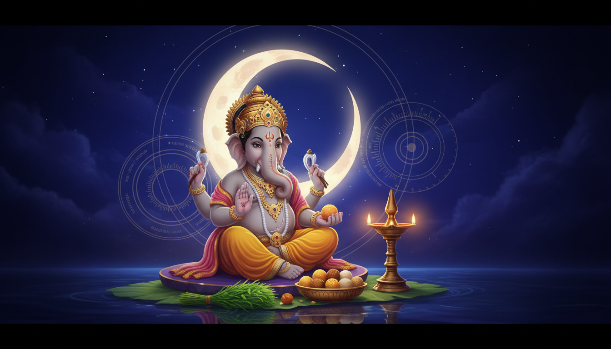

वैदिक घड़ी समुदाय के लिए अगला मुख्य उपचारात्मक समय पुरुषोत्तम मास की विभुवन संकष्टी चतुर्थी है। यह चतुर्थी तिथि 3 जून 2026 रात 9:21 बजे IST से शुरू होकर 4 जून 2026 रात 11:30 बजे IST तक रहेगी। संकष्टी का चंद्रोदय लगभग 3 जून 2026 रात 9:50 बजे IST बताया गया है, इसलिए 3 जून की रात गणेश पूजा, चंद्र दर्शन, व्रत पूर्ण करने और बाधा-मुक्ति के संकल्प के लिए सबसे उपयोगी समय बनती है।

यह विषय इसलिए प्रभावी है क्योंकि इसमें तीन बातें साथ आती हैं: साफ शुरू और समाप्ति समय, भगवान गणेश का सरल और लोकप्रिय उपाय, और पुरुषोत्तम मास की दुर्लभ आध्यात्मिक पृष्ठभूमि। ज्योतिष, आयुर्वेद, भक्ति, अध्यात्म और समग्र स्वास्थ्य पर आधारित ऐप के लिए यह समय केवल पूजा का नहीं, बल्कि जीवन की बार-बार लौटने वाली बाधाओं को समझने का अवसर है।
आगामी समय अवधि
| समय अवधि | आरंभ | समाप्ति | मुख्य साधना |
|---|---|---|---|
| चतुर्थी तिथि | 3 जून 2026, रात 9:21 बजे IST | 4 जून 2026, रात 11:30 बजे IST | गणेश पूजा, बाधा मुक्ति, संकल्प सुधार |
| चंद्रोदय केंद्र | 3 जून 2026, लगभग रात 9:50 बजे IST | चंद्र दर्शन और अर्घ्य के बाद | संकष्टी व्रत पूर्ण करना, कृतज्ञता, संयम |
| परामर्श चिंतन | 4 जून 2026, सूर्योदय से रात 11:30 बजे तक | तिथि समाप्ति से पहले | दोहराई जा रही बाधा पहचानना और एक सुधार चुनना |
यह समय क्यों महत्वपूर्ण है
संकष्टी चतुर्थी भगवान गणेश को समर्पित मानी जाती है। गणेश जी विघ्नों को दूर करने वाले और शुभ आरंभ के अधिपति हैं। जब यह व्रत पुरुषोत्तम मास में आता है, तो इसका भाव और गहरा हो जाता है। यह केवल बाधा हटाने की प्रार्थना नहीं है, बल्कि यह देखने का समय है कि कौन सी आदत, डर, टालमटोल, क्रोध, भ्रम या अधूरा निर्णय बार-बार वही बाधा बनाता है।
वैदिक काउंसलिंग में यही अंतर महत्वपूर्ण है। पूजा में मंत्र, व्रत, चंद्र दर्शन, अर्घ्य और प्रसाद आते हैं। परामर्श में व्यक्ति अपने भीतर के पैटर्न को पहचानता है। गणेश उपाय तब अधिक जीवंत होते हैं जब भक्ति के साथ एक ईमानदार व्यवहारिक सुधार भी जुड़ता है।
ज्योतिष और उपाय का अर्थ
गणेश जी को बुध और केतु से जुड़ी परेशानियों में भी स्मरण किया जाता है। बिखरा हुआ मन, निर्णय में देरी, अचानक उदासी, अधूरे काम, पढ़ाई या काम में रुकावट, संवाद की उलझन और अनावश्यक भय जैसे विषय इस समय परामर्श में सामने आ सकते हैं। चतुर्थी के समय साधक खुद से यह प्रश्न पूछ सकता है:
मैं जिस बाधा को भाग्य कह रहा हूं, क्या वह वास्तव में कोई दोहराया हुआ व्यवहार है जिसे सुधारना है?
यह प्रश्न ऐप के लिए अच्छा है क्योंकि यह पाठक को तुरंत जोड़ता है। वैदिक घड़ी का उद्देश्य भी यही है कि समय को केवल घड़ी की संख्या न माना जाए, बल्कि उसे सही कर्म, सही विराम और सही साधना का संकेत समझा जाए।
आयुर्वेद और स्वास्थ्य मार्गदर्शन
व्रत को शरीर की क्षमता के अनुसार रखना चाहिए। संकष्टी साधना में हल्का सात्त्विक भोजन, गुनगुना जल, फलाहार या सरल उपवास रखा जा सकता है। जिन्हें मधुमेह, गर्भावस्था, दवा का समय, कमजोरी या कोई गंभीर स्वास्थ्य स्थिति हो, उन्हें कठोर उपवास नहीं करना चाहिए। ऐसे लोगों के लिए उपाय सात्त्विक अनुशासन हो सकता है: कठोर वाणी न बोलना, अनावश्यक खर्च न करना, देर रात डिजिटल भटकाव से बचना और चंद्र दर्शन के बाद शांत भोजन लेना।
मन और शरीर को संतुलित करने के लिए 3 जून की रात यह क्रम उपयोगी है:
- चंद्रोदय से पहले 12 मिनट शांत बैठें।
- ॐ गं गणपतये नमः मंत्र का 108 बार जप करें।
- पिछले 30 दिनों की सबसे बार-बार आई बाधा को लिखें।
- उपलब्धता के अनुसार दूर्वा, मोदक, गुड़, लाल फूल या सच्ची प्रार्थना अर्पित करें।
- चंद्र दर्शन के बाद उस बाधा को कम करने वाला एक छोटा व्यवहारिक कदम लें।
ऐप के लिए भक्ति अभ्यास
इस विषय को ऐप में समयबद्ध स्मरण के रूप में प्रस्तुत किया जा सकता है:
- 3 जून 2026, रात 9:21 बजे IST: चतुर्थी आरंभ। बाधा-मुक्ति संकल्प शुरू करें।
- 3 जून 2026, रात 9:50 बजे IST: चंद्रोदय केंद्र। अर्घ्य दें, गणेश मंत्र जपें और व्रत को मन से पूर्ण करें।
- 4 जून 2026, सुबह: संकल्प से जुड़ा एक व्यवहारिक सुधार चुनें।
- 4 जून 2026, रात 11:30 बजे IST से पहले: कृतज्ञता के साथ उपाय पूरा करें और उसी पुराने पैटर्न को फिर शुरू न करें।
ऐप की भाषा में यह संदेश सरल रखा जा सकता है: "एक बाधा हटाएं, सारी बाधाएं नहीं।" इससे साधना व्यावहारिक रहती है और व्यक्ति आध्यात्मिक दबाव में नहीं आता।
सुझाए गए उपाय
- रात के समय ॐ गं गणपतये नमः का 108 बार जप करें।
- उपलब्ध हो तो दूर्वा, लाल फूल, गुड़ या मोदक अर्पित करें।
- किसी जरूरतमंद की सहायता करें या अन्न दान करें।
- उपाय के 24 घंटे के भीतर एक रुका हुआ काम शुरू करें।
- 4 जून रात 11:30 बजे IST तक कठोर वाणी और जल्दबाजी से बचें।
अंतिम संकेत
इस ब्लॉग का मुख्य संदेश यह होना चाहिए कि विभुवन संकष्टी चतुर्थी 3-4 जून की बाधा-मुक्ति समय अवधि है। इसका सबसे मजबूत आकर्षण भविष्यवाणी नहीं, बल्कि भागीदारी है: पाठक आरंभ समय नोट कर सकता है, चंद्रोदय साधना कर सकता है और तिथि समाप्त होने से पहले एक वास्तविक जीवन सुधार पूरा कर सकता है।